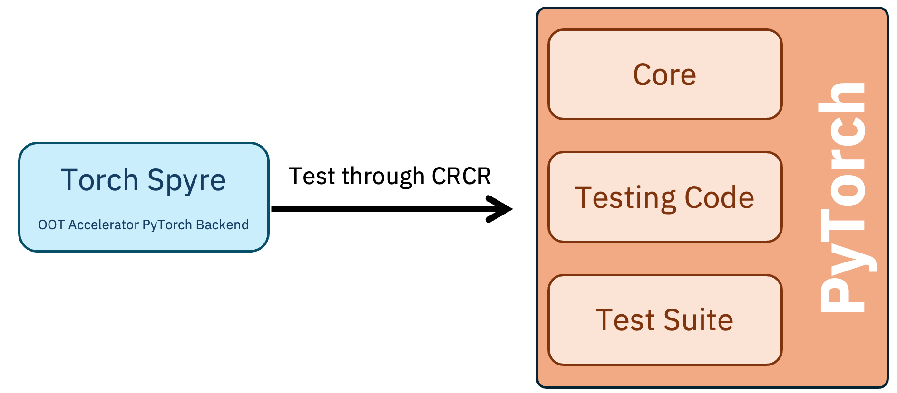
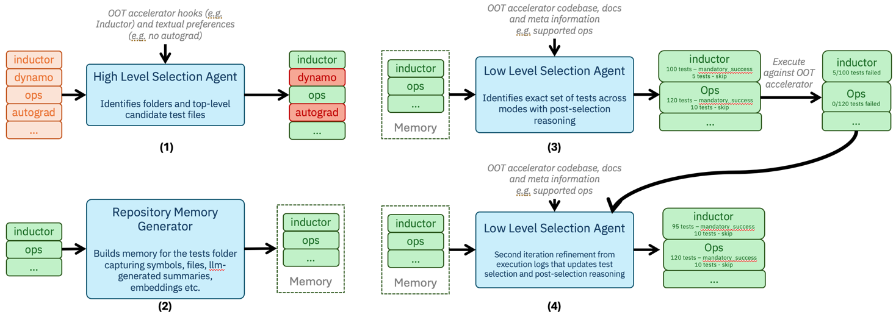
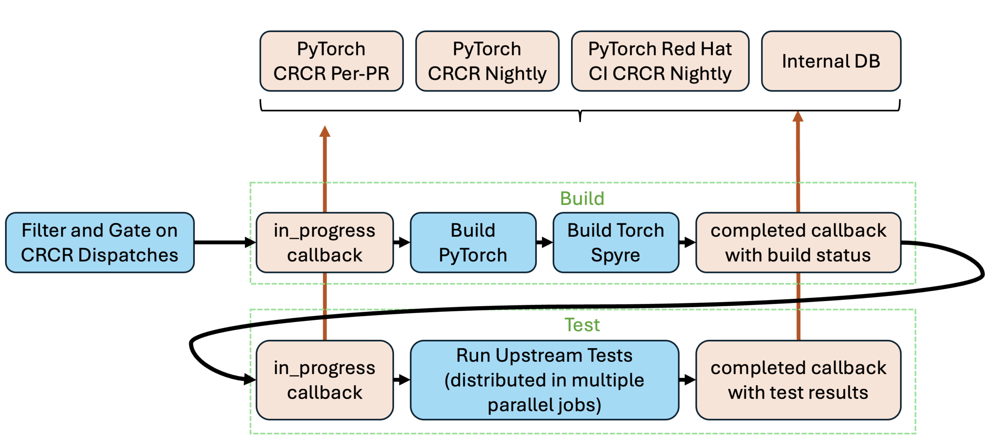
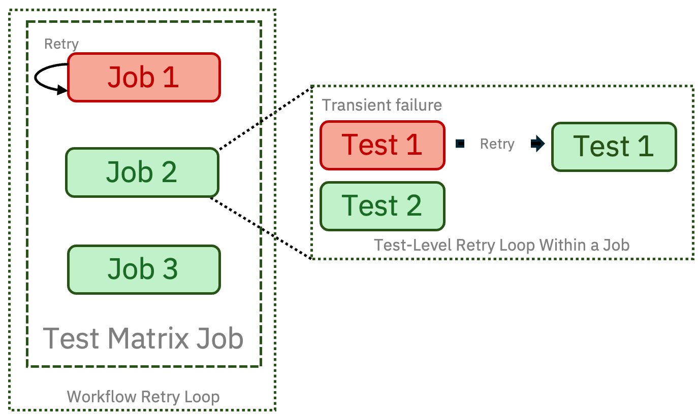

树外加速器最头疼的不是写kernel，是上游PyTorch一变、自己的CI怎么跟上。PyTorch的Cross-Repository CI Relay（CRCR）把这事标准化了：上游发dispatch，下游跑测试，结果直接报给PyTorch reviewer看。
IBM的Torch Spyre团队把CRCR接到了L2深度，写了这篇长文。下面拆开选测试的Agent流水线、声明式测试复用框架，以及dispatch消费、切分并行、重试这些工程细节。
CRCR补的是PyTorch和树外加速器仓库之间的协同缺口：标准化地在上游变更时触发下游CI，把结果直接呈现给PyTorch reviewer，回归在一个统一视图（PyTorch CI CRCR HUD）里看。下游要做的很少：allowlist加个条目、一个监听repository_dispatch的workflow、一个组合回调action。
CRCR还给了四级集成深度，让下游从“收到上游dispatch通知”逐步走到“经HUD上报结果”再到“参与上游合并门禁”。但有意思的工程都在relay之后：测什么、哪些dispatch值得构建、几万个测试里哪些对自家硬件有意义、怎么适配为CUDA写的测试、“绿”允许多绿。这些决策归下游所有，因为只有下游知道自己硬件的边界。

收到dispatch后，树外加速器要面对三个都在变的候选：一是自家后端代码（Torch Spyre是IBM Spyre加速器的PyTorch后端，深嵌PyTorch的树外扩展接口，测试面覆盖算子和运行时行为）；二是PyTorch core本身，运行时组件一改就可能引入回归；三是测试套件自己，它也在变。
于是下一个决策是：到底跑哪种组合。主组合是三个的最新版：最新后端代码、最新PyTorch core、最新测试套件。还可以扩展，比如拿多个后端版本对移动的PyTorch core和测试套件测，挖前后兼容问题。每种组合作为独立job报给HUD，回归归属一目了然。
PyTorch有几万个测试，人工挑哪些和自家后端相关不现实，更别说PyTorch和后端都在变的时候保持更新。Torch Spyre做了个Agent流水线，四段：前两段建上下文，后两段先从代码做决策、再从执行做决策。
高层选择：第一个Agent把搜索空间从整个测试树缩到值得分析的文件夹和顶层文件，输入是后端实际hook了哪些PyTorch扩展点，加上自然语言的范围偏好。不hook torch.dynamo、还没准备好吃autograd的后端，在这里就把那些树整个跳过。
仓库记忆：Repository Memory Generator把候选做成可查询索引，符号、文件、LLM写的摘要、每个测试的embedding都有。下一段的选择Agent可以一次性对整个候选集推理，不被单个上下文窗口卡住。
低层选择：第二个Agent读后端的代码、文档和元数据（比如支持的算子），查出确切要跑的测试，分进mandatory_success或skip两桶，每个决策都记录理由。真机执行修正：选中的测试在真硬件上跑，Agent看执行日志再过一遍，抓静态分析漏掉的运行时失败和数值差异，输出修正后的分桶和理由。
这套流水线现在给每个上游测试文件产出一个配置文件，覆盖几千个具名测试用例，merge跑在真机上执行。覆盖自动增长：后端新使能一个算子，所有等这个算子的测试自动准入，不用手工维护名单。审计性也很关键：每个分桶决策都以注释写回配置，问“为什么跳过这个测试”，答案在文件里，不在模型的记忆里。

后端新使能一个算子，该开哪些测试？先做test-to-op映射：每个测试记录它练了哪些算子，建反向索引。Repository Memory Generator在一次性执行里抓这个元数据：eager路径走TorchDispatchMode，编译路径走TORCH_LOGS。但抓到的测试不能直接加进来，一个测试可能还练了后端不支持的特性，所以算子信息加测试文件一起交给低层选择Agent再筛一遍。结果：开一个算子，所有相关测试自动浮现，零手工。
PyTorch版本升级时怎么不重跑全量？测试套件的变更并进仓库记忆，只对delta（新增和修改的测试）跑低层选择Agent。2.13升2.14只评估了约4000个变更测试，而不是几万个全量。版本升级变成配置diff，不是全量重跑。
PyTorch测试经常按dtype、shape、算子参数化，一个dtype不支持就跳过整个测试太粗，应该只排除那个dtype。更深的适配（比如去掉CUDA写死）传统做法要给上游打补丁，Torch Spyre做了个声明式框架表达这些适配，不动上游。
三个控制：参数级旋钮（子选dtype、排除特定shape、给关心的dtype加覆盖）、结果分桶（mandatory_success必须过、xfail预期失败、xfail_strict预期失败但意外通过算失败、skip）、能力驱动准入（全局声明支持的算子和dtype，开一个新算子自动放行所有等它的测试）。
配置长这样：文件条目先定默认策略，未列出的测试怎么处理；再把测试分桶列出来；edits块对单个用例做适配，不碰上游源码。
声明了默认：unlisted_test_mode给未列出的测试定结果，上游明天加个新测试，CI不会当天就炸。四档结果桶里xfail_strict最有味道：意外通过会被当成信号，提示把这个测试转正，而不是静默。
按用例适配：edits精确到单个dtype、算子、模块，不支持的dtype只花一个dtype的代价，不赔整个测试。能力声明一次：global.supported_ops和supported_dtypes按文件声明，后端开一个算子是一行配置的改动，所有等它的测试自动准入。
实现上框架在收集时patch上游的ops、modules、dtypes三个装饰器，打出pytest mark（op__、dtype__），同一份配置既驱动适配又驱动选择：-m op__add就精确跑练这个算子的测试。关键保证：上游测试树保持干净，版本升级是配置diff不是合并冲突；框架面向通用privateuse1设备，不绑硬件。
CRCR集成从消费dispatch开始。payload里有几个关键字段：SHA（要验证的确切上游commit）、PR号（把下游结果关联到上游PR）、Action（PR是开了、更新了还是关了/合了）、Base Branch（目标分支，可过滤main和release分支）、PR Label（比如用“Merged”标签识别已合PR）。
想只跑合进main的PR，得action是带merge信号的closed加base branch是main。merge信号是间接的，得从标签里抠：

CRCR不给nightly发dispatch，但HUD支持上报nightly结果，workflow按定时跑，自己解析SHA：从nightly分支取最新commit，再从commit message里抠出源SHA。Release发布也不发dispatch，手动workflow_dispatch触发，传release分支，SHA解析走同一套。注意HUD目前没有release结果的专用视图。
还有个竞态边角：标签可能在dispatch之后才打上，或者手动合并根本没打标签，关键流程要做防御性处理，比如轮询或兜底启发式。
几千个测试要跑得快。切分三级：按功能分组（Inductor、算子、eager等）；每组再按时长上限（比如30分钟）细分；单个测试均衡分桶，避免掉队。建这个需要一次计时跑，测每个测试和每组的耗时，结果是并行job一起结束，没有一个job拖全场。
一次构建多处用：PyTorch和后端的wheel只构建一次，发成workflow artifact，所有测试分片消费同一份。省掉重复构建，也保证所有job测的是同一份产物。
HUD里workflow的最终状态应该只反映PyTorch和后端代码引入的回归，而不是偶发的机器故障。除了平台层的可靠性措施，workflow层面还有几套模式：并行隔离执行（一个job挂了不影响别的job上报）、非关键路径continue-on-error、重试（workflow级重试加job内按测试日志和失败启发式的细粒度重试）、日志和失败分类（把可重试恢复的瞬时故障和真正的回归分开）、一次构建多处用（并行job测同一份产物，减少不一致）。

GitHub的matrix策略里每个leg有自己的check_run_id，而CRCR要求in_progress和completed回调对必须来自同一个job，用check_run_id跟踪重试。所以回调不能从生matrix的父job发。
两个绕法：A是每leg自己发回调，简单，但大matrix会把HUD刷屏，动态job也不合适；B是dispatch加轮询，父job派发一个含matrix的子workflow再轮询等完。这个模式也适用于异构CI，比如从GitHub Actions父job触发Jenkins或其他平台。
两周前的一次失败要调试，得知道当时到底跑了什么。这些元数据存成workflow artifact：dispatch payload（PR号、SHA、action）、PyTorch和后端的wheel版本或commit SHA、运行时环境（Python、CUDA、OS、CPU架构）、每个测试的结果（过/挂/跳、耗时）。配上一次构建的产物，任何一次跑weeks后都能复现或二分。
参考：https://pytorch.org/blog/from-upstream-changes-to-downstream-confidence-inside-torch-spyres-integration-with-pytorch-crcr/